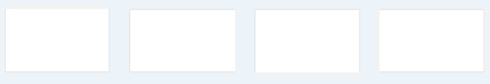

Border Utilities
Add or remove borders from certain components.
Usage
Use border utilities to add borders for visual purposes or remove them from certain components to prevent border collapsing.
Default styles for borders are applied via sass variables: $base-border-color, $base-border-width found in settings/_settings.global.scss file.
Add borders
Add u-border-{direction} to quickly add borders to any element based on
the direction specified.
<div class="u-border-top"></div>
<div class="u-border-right"></div>
<div class="u-border-bottom"></div>
<div class="u-border-left"></div>
Remove borders
Remove u-border-{direction}-zero to quickly remove borders from any element based on
the direction specified.

<div class="u-border-top-zero"></div>
<div class="u-border-right-zero"></div>
<div class="u-border-bottom-zero"></div>
<div class="u-border-left-zero"></div>